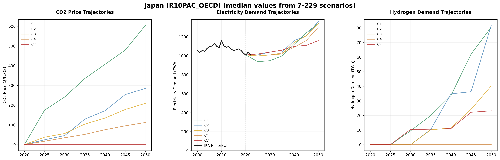

Climate Scenarios — JPN¶
AR6 Scenario Coverage — R10PAC_OECD¶
This model incorporates climate scenario drivers from the IPCC AR6 database for the R10PAC_OECD region, derived from 350 vetted scenario-model combinations spanning 5 climate categories from ambitious 1.5°C pathways (C1) to limited mitigation trajectories (C7). The scenarios cover 7 years from 2020 to 2050, providing comprehensive pathways for energy system transformation under different climate policy futures.
| Metric | Value | Description |
|---|---|---|
| Total Scenarios | 350 | Vetted scenario-model combinations from AR6 database |
| Climate Categories | 5 | From C1 (1.5°C) to C7 (limited action) |
| Temporal Coverage | 2020–2050 | Multi-decade transformation pathways |
| Regional Scope | R10PAC_OECD | IPCC R10 regional classification |
| IEA Baseline Records | 32 | Historical electricity balance data |
Scenario Trajectories¶

CO₂ prices, electricity growth, and hydrogen deployment across climate ambitions
Key Transformation Pathways¶
Carbon Pricing Evolution: CO₂ prices show dramatic divergence across climate ambitions, ranging from $242 to $0/tCO₂ by 2030 under ambitious vs. limited action scenarios. By 2050, this gap widens to $604–$0/tCO₂.
Electrification Acceleration: Total electricity demand grows by 1.3× under ambitious climate scenarios (C1) compared to 1.1× under limited action (C7) by 2050, reflecting massive sectoral electrification across transport, heating, and industry.
Hydrogen Integration: Hydrogen deployment reaches 0.1% of electricity demand by 2050 under ambitious scenarios, compared to 0.0% under limited action.
Mobility Transformation: Transport electricity consumption grows from 2.0% to 15.0% of total electricity demand under ambitious scenarios — a 7.5× increase.
Model Agreement¶
Analysis across 350 scenario-model combinations reveals:
- High Convergence — CO₂ pricing (CV: inf%) and electricity growth (CV: 16.0%)
- Moderate Uncertainty — Transport electrification rates (CV: 62.8%)
- High Divergence — Hydrogen deployment pathways (CV: inf%)
The R10PAC_OECD region shows moderate convergence compared to global averages, with region-specific climate policy patterns reflecting economic and policy context.